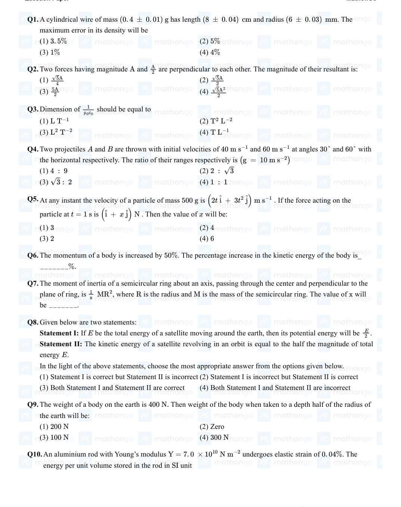
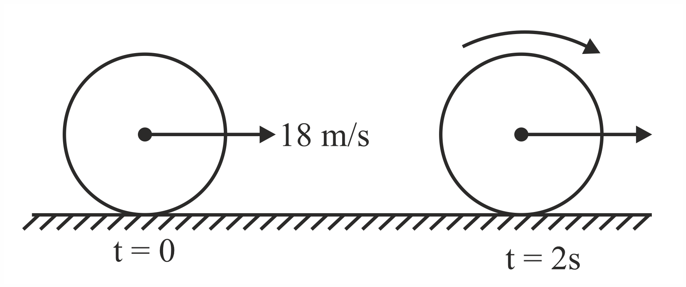
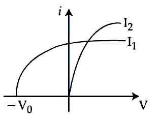
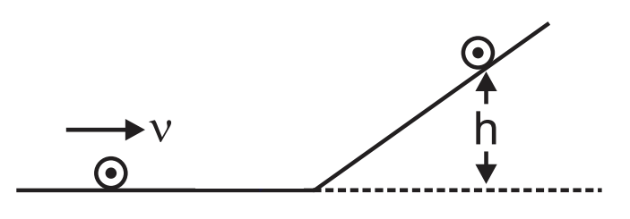
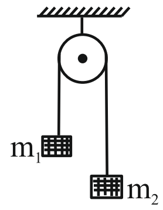

Filter questions
Q1
PHY-2021-0101-S2-Q004
2021 | 01 Sep | Shift 2
—
MCQ
A block of mass m slides on the wooden wedge, which in turn slides backward on the horizontal surface. The acceleration of the block with respect to the wedge is: Given m= 8 kg, M= 16 kg Assume all the surfaces shown in the figure to be frictionless.

Answer: D
Q2
PHY-2021-0101-S2-Q023
2021 | 01 Sep | Shift 2
—
Integer
When a body slides down from rest along a smooth inclined plane making an angle of 30° with the horizontal, it takes time When the same body slides down from the rest along a rough inclined plane making the same T. angle and through the same distance, it takes time αT, where α is a constant greater than 1. The co-efficient of friction between the body and the rough plane is 1 α2 - 1 where x= __________. √x α2

Answer: 3
Q3
PHY-2021-0101-S1-Q003
2021 | 16 Mar | Shift 1
—
MCQ
A block of mass m slides along a floor while a force of magnitude F is applied to it at an angle θ as shown in figure. The coefficient of kinetic friction is μK. Then, the block's acceleration a is given by: ( g is acceleration due to gravity)
Answer: B
Q4
PHY-2021-0101-S1-Q002
2021 | 17 Mar | Shift 1
—
MCQ
A modern grand-prix racing car of mass m is travelling on a flat track in a circular arc of radius R with a speed v. If the coefficient of static friction between the tyres and the track is μs, then the magnitude of negative lift FL acting downwards on the car is:
Answer: B
Q5
PHY-2021-0101-S1-Q021
2021 | 17 Mar | Shift 1
—
Integer
Two blocks ( and ) are arranged on a horizontal frictionless table as shown in the m = 0. 5 kg M = 4. 5 kg figure. The coefficient of static friction between the two blocks is 3. Then the maximum horizontal force that 7 can be applied on the larger block so that the blocks move together is N. (Round off to the Nearest Integer) [Take g as 9. 8 m s−2 ]
Answer: 21
Q6
PHY-2021-0101-S2-Q021
2021 | 20 Jul | Shift 2
—
Integer
A body of mass m is launched up on a rough inclined plane making an angle of 30° with the horizontal. The coefficient of friction between the body and plane is √x if the time of ascent is half of the time of descent. The 5 value of x is
Answer: 3
Q7
PHY-2021-0101-S1-Q021
2021 | 24 Feb | Shift 1
—
Integer
The coefficient of static friction between a wooden block of mass and a vertical rough wall is 0.5 kg 0.2. The magnitude of the horizontal force that should be applied on the block to keep it adhere to the wall will be______N. g= 10 m s-2
Answer: 25
Q8
PHY-2021-0101-S1-Q022
2021 | 24 Feb | Shift 1
—
Integer
An inclined plane is bent in such a way that the vertical cross-section is given by x2 where is in vertical y= 4 y and x in horizontal direction. If the upper surface of this curved plane is rough with coefficient of friction μ= 0.5, the maximum height in cm at which a stationary block will not slip downward is________cm.
Answer: 25
Q9
PHY-2021-0101-S2-Q003
2021 | 25 Feb | Shift 2
—
MCQ
A sphere of radius a and mass m rolls along a horizontal plane with constant speed v0. It encounters an inclined plane at angle θ and climbs upward. Assuming that it rolls without slipping, how far up the sphere will travel? v2 7v2
Answer: B
Q10
PHY-2021-0101-S1-Q008
2021 | 25 Jul | Shift 1
—
MCQ
A monoatomic ideal gas, initially at temperature T1 is enclosed in a cylinder fitted with a frictionless piston. The gas is allowed to expand adiabatically to a temperature T2 by releasing the piston suddenly. If l1 and l2 are the lengths of the gas column, before and after the expansion respectively, then the value of T1 will be: T2
Answer: B
Q11
PHY-2021-0101-S2-Q022
2021 | 26 Aug | Shift 2
—
Integer
The coefficient of static friction between two blocks is 0. 5 and the table is smooth. The maximum horizontal force that can be applied to move the blocks together is _______ N (take g = 10 m s−2)
Answer: 15
Q12
PHY-2021-0101-S1-Q023
2021 | 26 Feb | Shift 1
—
Integer
As shown in the figure, a block of mass √3 kg is kept on a horizontal rough surface of coefficient of friction 1. The critical force to be applied on the vertical surface as shown at an angle 60° with horizontal such that 3√3 it does not move, will be 3x. The value of x will [g √3 ] = 10 m s−2; sin 60°= 2; cos 60°= 2 1
Answer: 3.33
Q13
PHY-2021-0101-S2-Q005
2021 | 26 Feb | Shift 2
—
MCQ
An inclined plane making an angle of 30° with the horizontal is placed in a uniform horizontal electric field N 200 C as shown in the figure. A body of mass 1 kg and charge 5 mC is allowed to slide down from rest at a height of 1 m. If the coefficient of friction is 0. 2, find the time taken by the body to reach the bottom. [g = 9. 8 m s−2; sin 30°= 1; cos 30°= √3 ] 2 2
Answer: B
Q14
PHY-2021-0101-S1-Q006
2021 | 27 Jul | Shift 1
—
MCQ
A light cylindrical vessel is kept on a horizontal surface. Area of the base is A. A hole of cross-sectional area a is made just at its bottom side. The minimum coefficient of friction necessary to prevent sliding the vessel due to the impact force of the emerging liquid is
Answer: C
Q15
PHY-2021-0101-S2-Q022
2021 | 27 Jul | Shift 2
—
Integer
A small block slides down from the top of hemisphere of radius R = 3 m as shown in the figure. The height h at which the block will lose contact with the surface of the sphere is m. (Assume there is no friction between the block and the hemisphere)
Answer: 2
Q16
PHY-2022-0101-S1-Q004
2022 | 24 Jun | Shift 1
—
MCQ
A block of mass 10 kg starts sliding on a surface with an initial velocity of 9. 8 ms−1. The coefficient of friction between the surface and block is 0. 5. The distance covered by the block before coming to rest is:[use g = 9. 8 ms−2 ]
Answer: A
Q17
PHY-2022-0101-S1-Q021
2022 | 25 Jun | Shift 1
—
Integer
A uniform chain of 6 m length is placed on a table such that a part of its length is hanging over the edge of the table. The system is at rest. The co-efficient of static friction between the chain and the surface of the table is 5, the maximum length of the chain hanging from the table is _____ m. 0.

Answer: 2
Q18
PHY-2022-0101-S2-Q022
2022 | 25 Jun | Shift 2
—
Integer
A curved in a level road has a radius m. The maximum speed of a car turning this curved road can be 75 30 m s-1 without skidding. If radius of curved road is changed to 48 m and the coefficient of friction between the tyres and the road remains same, then maximum allowed speed would be _____ m s-1.
Answer: 24
Q19
PHY-2022-0101-S2-Q004
2022 | 26 Jun | Shift 2
—
MCQ
A solid spherical ball is rolling on a frictionless horizontal plane surface about its axis of symmetry. The ratio of rotational kinetic energy of the ball to its total kinetic energy is
Answer: C
Q20
PHY-2022-0101-S1-Q004
2022 | 27 Jun | Shift 1
—
MCQ
A system of two blocks of masses m = 2 kg and M = 8 kg is placed on a smooth table as shown in figure. The coefficient of static friction between two blocks is. The maximum horizontal force that can be applied to 0. 5 F the block of mass M so that the blocks move together will be (g = 9. 8 m s−2)
Answer: C
Q21
PHY-2022-0101-S2-Q005
2022 | 28 Jun | Shift 2
—
MCQ
A √34 m long ladder weighing 10 kg leans on a frictionless wall. Its feet rest on the floor 3 m away from the Fw wall as shown in the figure. If Ff and Fw are the reaction forces of the floor and the wall, then ratio of Ff will be: (Use g = 10 m s−2.)
Answer: C
Q22
PHY-2023-0101-S1-Q004
2023 | 01 Feb | Shift 1
—
MCQ
A block of mass 5 kg is placed at rest on a table of rough surface. Now, if a force of 30 N is applied in the direction parallel to surface of the table, the block slides through a distance of 50 m in an interval of time 10 s. Coefficient of kinetic friction is (given, g = 10 m s – 2 ):

Answer: C
Q23
PHY-2023-0101-S1-Q022
2023 | 01 Feb | Shift 1
—
Integer
A solid cylinder is released from rest from the top of an inclined plane of inclination 30° and length 60 cm. If the cylinder rolls without slipping, its speed upon reaching the bottom of the inclined plane is ______ m s-1. (Given g= 10 m s-2)

Answer: 2
Q24
PHY-2023-0101-S1-Q004
2023 | 06 Apr | Shift 1
—
MCQ
A mass m is attached to two springs as shown in figure. The spring constants of two springs are K1 and K2. For the frictionless surface, the time period of oscillation of mass m is
Answer: A
Q25
PHY-2023-0101-S2-Q004
2023 | 08 Apr | Shift 2
—
MCQ
A bullet of mass 0. 1 kg moving horizontally with speed 400 m s−1 hits a wooden block of mass 3. 9 kg kept on a horizontal rough surface. The bullet gets embedded into the block and moves 20 m before coming to rest. The coefficient of friction between the block and the surface is _______.
Answer: D
Q26
PHY-2023-0101-S1-Q005
2023 | 12 Apr | Shift 1
—
MCQ
To maintain a speed of 80 km h−1 by a bus of mass 500 kg on a plane rough road for 4 km distance, the work done by the engine of the bus will be _____ kJ. [The coefficient of friction between tyre of bus and road is 0. 04 ]
Answer: A
Q27
PHY-2023-0101-S1-Q007
2023 | 13 Apr | Shift 1
—
MCQ
A solid sphere is rolling on a horizontal plane without slipping. If the ratio of angular momentum about axis of rotation of the sphere to the total energy of moving sphere is π: 22 then, the value of its angular speed will be _________rad s−1.

Answer: B
Q28
PHY-2023-0101-S2-Q004
2023 | 25 Jan | Shift 2
—
MCQ
Consider a block kept on an inclined plane (inclined at 45° ) as shown in the figure. If the force required to just push it up the incline is 2 times the force required to just prevent it from sliding down, the coefficient of friction between the block and inclined plane (μ) is equal to:.
Answer: A
Q29
PHY-2023-0101-S1-Q005
2023 | 29 Jan | Shift 1
—
MCQ
A block of mass m slides down the plane inclined at angle 30° with an acceleration 4. The value of coefficient of kinetic friction will be:
Answer: D
Q30
PHY-2023-0101-S2-Q006
2023 | 29 Jan | Shift 2
—
MCQ
The time taken by an object to slide down 45° rough inclined plane is n times as it takes to slide down a perfectly smooth 45° incline plane. The coefficient of kinetic friction between the object and the incline plane is:
Answer: D
Q31
PHY-2023-0101-S2-Q008
2023 | 29 Jan | Shift 2
—
MCQ
Identify the correct statements from the following:
Answer: A
Q32
PHY-2023-0101-S2-Q008
2023 | 30 Jan | Shift 2
—
MCQ
A uniform disc of mass 0. 5 kg and radius r is projected with velocity 18 m s−1 at t = 0 s on a rough horizontal surface. It starts off with a purely sliding motion at t = 0 s. After 2 s it acquires a purely rolling motion (see figure). The total kinetic energy of the disc after will be ______. 2 s J (given, coefficient of friction is 0. 3 and g = 10 m s−2 ).
Answer: B
Q33
PHY-2023-0101-S2-Q013
2023 | 30 Jan | Shift 2
—
MCQ
For a simple harmonic motion in a mass spring system shown, the surface is frictionless. When the mass of the block is 1 kg, the angular frequency is ω1. When the mass block is 2 kg the angular frequency is ω2. The ratio ω2 ω1 is:

Answer: B
Q34
PHY-2023-0101-S1-Q006
2023 | 31 Jan | Shift 1
—
MCQ
Spherical insulating ball and a spherical metallic ball of same size and mass are dropped from the same height. Choose the correct statement out of the following {Assume negligible air friction}
Answer: B
Q35
PHY-2023-0101-S1-Q025
2023 | 31 Jan | Shift 1
—
Integer
In the figure given below. a block of mass M= 490 g placed on a frictionless table is connected with two springs having same spring constant (K= 2 N m-1). If the block is horizontally displaced through X m then the number of complete oscillations it will make in 14π seconds will be ______.

Answer: 20
Q36
PHY-2024-0101-S1-Q022
2024 | 04 Apr | Shift 1
—
Integer
A solid sphere and a hollow cylinder roll up without slipping on same inclined plane with same initial speed v. The sphere and the cylinder reaches upto maximum heights h1 and h2, respectively, above the initial level. The ratio h1: h2 is n. The value of n is______. 10

Answer: 7
Q37
PHY-2024-0101-S2-Q003
2024 | 04 Apr | Shift 2
—
MCQ
A 2 kg brick begins to slide over a surface which is inclined at an angle of 45∘ with respect to horizontal axis. The co-efficient of static friction between their surfaces is:
Answer: D
Q38
PHY-2024-0101-S1-Q021
2024 | 05 Apr | Shift 1
—
Integer
A body moves on a frictionless plane starting from rest. If Sn is distance moved between t = n −1 and t = n and Sn−1 is distance moved between t = n −2 and t = n −1, then the ratio Sn−1 is (1 −2 ) for n = 10. The Sn x value of x is ______.
Answer: 19
Q39
PHY-2024-0101-S2-Q004
2024 | 05 Apr | Shift 2
—
MCQ
A heavy box of mass is moving on a horizontal surface. If co-efficient of kinetic friction between the box 50 kg and horizontal surface is 0.3 then force of kinetic friction is:
Answer: B
Q40
PHY-2024-0101-S2-Q010
2024 | 05 Apr | Shift 2
—
MCQ
The vehicles carrying inflammable fluids usually have metallic chains touching the ground:
Answer: D
Q41
PHY-2024-0101-S2-Q004
2024 | 06 Apr | Shift 2
—
MCQ
A car of 800 kg is taking turn on a banked road of radius 300 m and angle of banking 30∘. If coefficient of static friction is 0.2 then the maximum speed with which car can negotiate the turn safely: (g 1.73) = 10 m/s2, √3 =
Answer: B
Q42
PHY-2024-0101-S2-Q003
2024 | 08 Apr | Shift 2
—
MCQ
A given object takes n times the time to slide down 45∘ rough inclined plane as it takes the time to slide down an identical perfectly smooth 45∘ inclined plane. The coefficient of kinetic friction between the object and the surface of inclined plane is: −n2
Answer: C
Q43
PHY-2024-0101-S2-Q003
2024 | 27 Jan | Shift 2
—
MCQ
Given below are two statements: Statement (I): The limiting force of static friction depends on the area of contact and independent of materials. Statement (II): The limiting force of kinetic friction is independent of the area of contact and depends on materials. In the light of the above statements, choose the most appropriate answer from the options given below:
Answer: B
Q44
PHY-2024-0101-S2-Q022
2024 | 27 Jan | Shift 2
—
Integer
A ring and a solid sphere roll down the same inclined plane without slipping. They start from rest. The radii of both bodies are identical and the ratio of their kinetic energies is 7 x, where x is ______.

Answer: 7
Q45
PHY-2024-0101-S1-Q004
2024 | 29 Jan | Shift 1
—
MCQ
A block of mass 100 kg slides over a distance of 10 m on a horizontal surface. If the co-efficient of friction between the surfaces is 0. 4, then the work done against friction (in J ) is:
Answer: C
Q46
PHY-2024-0101-S2-Q004
2024 | 30 Jan | Shift 2
—
MCQ
A block of mass m is placed on a surface having vertical cross section given by y= x2. If coefficient of friction 4 is 0.5, the maximum height above the ground at which block can be placed without slipping is: 1 1
Answer: A
Q47
PHY-2024-0101-S2-Q005
2024 | 30 Jan | Shift 2
—
MCQ
A block of mass 1 kg is pushed up a surface inclined to horizontal at an angle of 60° by a force of 10 N parallel to the inclined surface as shown in figure. When the block is pushed up by 10 m along inclined surface, the work done against frictional force is: g= 10 m s-2

Answer: B
Q48
PHY-2024-0101-S1-Q006
2024 | 31 Jan | Shift 1
—
MCQ
A coin is placed on a disc. The coefficient of friction between the coin and the disc is μ. If the distance of the coin from the center of the disc is r, the maximum angular velocity which can be given to the disc, so that the coin does not slip away, is: μg r
Answer: C
Q49
PHY-2024-0101-S2-Q004
2024 | 31 Jan | Shift 2
—
MCQ
A block of mass 5 kg is placed on a rough inclined surface as shown in the figure. If →F1 is the force required to just move the block up the inclined plane and → F2 is the force required to just prevent the block from sliding →F1 →F2 down, then the value of − is: [Use g= 10 m s-2]

Answer: B
Q50
PHY-2025-0101-S1-Q029
2025 | 24 Jan | Shift 1
—
Integer
A car of mass ' m ' moves on a banked road having radius ' r ' and banking angle θ. To avoid slipping from banked road, the maximum permissible speed of the car is v0. The coefficient of friction μ between the wheels of the car and the banked road is (1) μ = v2o+rg tan θ (2) v2 0−rg tan θ rg+v2o tan θ μ = rg−v2 tan θ (3) v2 0−rg tan θ (4) v2 o+rg 0 tan θ μ = rg+v2 tan μ = rg−v2o tan θ 0 θ
Answer: 3